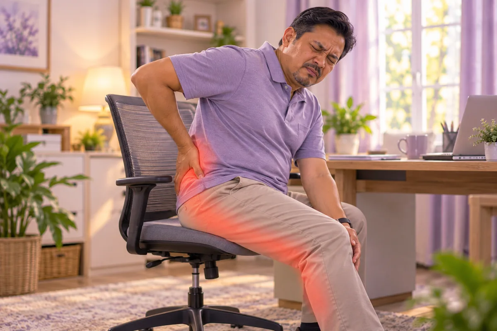

Sciatica (sakit saraf sciatik)
Sakit sepanjang saraf sciatic, dari pinggang melalui punggung ke kaki
Apa itu
Sakit yang menjalar sepanjang saraf sciatic dari pinggang melalui punggung ke kaki, biasanya di sebelah sahaja.
- Pinggang ke kaki
- Saraf dirangsang
- Sakit menjalar
- Jumpa doktor
- Doktor keluarga, doktor ortopedik (tulang belakang), pakar neurologi, ahli fisioterapi
- Biasa pada
- Orang dewasa umur 30 hingga 60 tahun
- Berjangkit
- Tidak
- Perjalanan
- Selalunya bertambah baik dalam beberapa minggu hingga bulan
Butiran perubatan
Apa yang berlaku
Saraf sciatic ialah saraf terpanjang dalam badan. Ia terbentuk daripada akar saraf di pinggang (L4 hingga S3), melalui punggung dan ke bawah di belakang paha, kemudian bercabang untuk membekalkan kaki. Sciatica ialah nama bagi sakit sepanjang laluan ini. Ia gejala, bukan penyakit: akar saraf biasanya dirangsang atau ditekan di pinggang, selalunya oleh cakera tergelincir atau penyempitan ruang di sekeliling saraf, dan kadang-kadang oleh otot punggung yang tegang (piriformis).
Punca biasa mengikut jenis
- Radikulopati lumbar: akar saraf dirangsang di tulang belakang; punca paling biasa
- Sindrom piriformis: otot yang tegang di punggung menekan saraf; kurang biasa
- Punca lain: kehamilan, kecederaan atau, jarang sekali, ketumbuhan atau jangkitan menekan saraf
Prognosis
Kebanyakan orang bertambah baik dalam 4 hingga 6 minggu, selalunya tanpa pembedahan. Kekal aktif secara lembut, penjagaan mudah di rumah dan bimbingan doktor atau ahli fisioterapi membantu. Sebilangan kecil mempunyai sakit saraf yang berpanjangan dan memerlukan rawatan lanjut.
Tanda biasa

Sakit menjalar ke kakiSciatica 
Sakit pinggangLumbago (sakit pinggang) 
Sakit di pinggulSakit pinggul 
Kaki kebas dan kesemutanNeuropati periferi 
Kaki terasa lemahKelemahan kaki 
Sukar berjalan jauhDaya berjalan berkurang
Butiran perubatan
Gejala dengan lebih terperinci
- Sakit menjalar: sakit tajam, membakar atau seperti renjatan dari pinggang atau punggung ke belakang kaki, kadang-kadang hingga betis atau kaki, biasanya di sebelah sahaja
- Lebih teruk dengan: duduk, batuk, bersin dan membongkok
- Kesemutan atau kebas: di kaki, mengikut laluan saraf
- Kelemahan: kaki yang berat atau lemah, atau sukar mengangkat kaki
- Tanda amaran: kebas di sekitar pangkal paha, masalah baru dengan kencing atau usus, atau kelemahan pada kedua-dua kaki: ke hospital segera
Mengapa ia berlaku

Duduk berjam-jamDuduk lama 
Cara mengangkat yang salahCara angkat yang salah (beban fleksi lumbar) 
Peningkatan usiaDegenerasi cakera berkaitan usia 
Memandu berjam-jamDuduk lama dan getaran 
Membongkok dengan komputer ribaPostur yang buruk 
Membawa beban berat di sebelah sahajaBeban tidak seimbang
Butiran perubatan
Punca dan faktor risiko
- Cakera tergelincir: punca paling biasa
- Penyempitan tulang belakang (stenosis): kehausan berkaitan usia dan taji tulang boleh menyempitkan ruang di sekeliling saraf
- Vertebra tergelincir atau kecederaan: perubahan di tulang belakang bawah boleh merengsa akar saraf
- Otot punggung yang tegang: piriformis boleh menekan saraf
- Faktor risiko: umur, mengangkat berat atau memulas, duduk atau memandu lama, berat badan berlebihan, dan diabetes (saraf lebih mudah rosak)
Jumpa doktor dahulu jika
- Kebas di sekitar pangkal paha atau paha dalam: ke hospital segera
- Masalah baru untuk kencing atau mengawal usus: ke hospital segera
- Kaki lemah atau tersandung
- Sakit kaki selepas jatuh atau kemalangan, atau dengan demam
- Sakit teruk yang mengejutkan anda pada waktu malam
- Sakit kaki tidak reda selepas kira-kira 6 minggu
Jika mana-mana berkenaan, sila jumpa doktor sebelum sesi.
Teruskan mengambil ubat biasa anda dan terus berjumpa doktor. Sesi kami ialah sokongan lembut dan tidak menggantikan rawatan perubatan.
Butiran perubatan
Bagaimana doktor memeriksa
Penemuan imbasan sentiasa dibaca bersama gejala anda, kerana perubahan cakera biasa pada orang yang tidak sakit.
- Pemeriksaan: berjalan, kekuatan, refleks dan deria pada kaki, dan ujian angkat kaki lurus (kaki diangkat semasa berbaring untuk melihat sama ada sakit menjalar ke kaki)
- MRI: menunjukkan cakera dan saraf; digunakan apabila gejala teruk atau berlanjutan lebih kira-kira 6 minggu
- X-ray, CT dan ujian saraf (EMG): digunakan dalam kes tertentu
Masalah yang terasa serupa
Masalah sendi pinggul, sakit sendi sakroiliak, ketegangan otot, aliran darah yang kurang baik di kaki dan kerosakan saraf akibat diabetes boleh terasa seperti sciatica, jadi doktor memeriksa untuk membezakannya. Sakit kaki dengan betis yang bengkak, merah dan panas memerlukan rawatan segera: hubungi 999 jika anda juga sesak nafas.
Menjaga diri

Berjalan sedikit setiap hariSenaman aerobik berimpak rendah 
Bungkusan hangat di pinggangHaba permukaan 
Kerusi yang menyokong belakangSokongan lumbar 
Regangan belakang yang lembutSenaman mobiliti lumbar 
Angkat dengan kakiTeknik mengangkat yang selamat 
Kuatkan otot terasSenaman penstabilan teras
Butiran perubatan
Penjagaan harian dengan lebih terperinci
- Kekal aktif secara lembut: berjalan pendek beberapa kali sehari biasanya lebih membantu daripada berehat lama di katil; elakkan pergerakan yang menghantar sakit ke kaki
- Kehangatan: bungkusan hangat pada pinggang atau punggung boleh melegakan otot tegang
- Regangan lembut: hanya dalam julat yang selesa; ahli fisioterapi boleh menunjukkan yang sesuai dengan saraf dan tulang belakang anda
- Duduk dan angkat dengan baik: kusyen kecil pada lengkung pinggang, kerap tukar posisi, bengkokkan lutut untuk mengangkat
- Pelega sakit: tanya doktor atau ahli farmasi apa yang selamat untuk anda; jangan mula ubat baru sendiri
- Berat badan dan merokok: berat badan yang sihat dan tidak merokok membantu cakera dan saraf
Beritahu ahli terapi anda
- Kaki kebas atau kesemutan
- Kaki lemah
- Kecederaan atau pembedahan belakang baru-baru ini
- Diabetes atau deria kulit berkurang
- Perentak jantung atau implan logam
- Kehamilan
Ahli terapi anda akan menyemaknya bersama anda sebelum bermula.
Soalan dan jawapan
Apakah Sciatica (sakit saraf sciatik)?
Sakit sepanjang saraf sciatic, dari pinggang melalui punggung ke kaki. Sakit yang menjalar sepanjang saraf sciatic dari pinggang melalui punggung ke kaki, biasanya di sebelah sahaja.
Apakah tanda biasa Sciatica (sakit saraf sciatik)?
Sakit menjalar ke kaki · Sakit pinggang · Sakit di pinggul · Kaki kebas dan kesemutan · Kaki terasa lemah · Sukar berjalan jauh
Mengapa Sciatica (sakit saraf sciatik) berlaku?
Duduk berjam-jam · Cara mengangkat yang salah · Peningkatan usia · Memandu berjam-jam · Membongkok dengan komputer riba · Membawa beban berat di sebelah sahaja
Bagaimana menjaga diri dengan Sciatica (sakit saraf sciatik)?
Berjalan sedikit setiap hari · Bungkusan hangat di pinggang · Kerusi yang menyokong belakang · Regangan belakang yang lembut · Angkat dengan kaki · Kuatkan otot teras
Bolehkah sesi AI Body Master membantu Sciatica (sakit saraf sciatik)?
Sesi ialah sokongan meridian tanpa jarum yang lembut untuk kesejahteraan anda. Ia tidak merawat atau menyembuhkan Sciatica (sakit saraf sciatik) dan tidak menggantikan ubat atau doktor anda. Beritahu ahli terapi anda sebelum sesi bermula.
Keadaan berkaitan
Rujukan: Mayo Clinic: Sciatica; NHS: Sciatica; Cleveland Clinic: Sciatica; NCBI StatPearls: Sciatica
Halaman dikemas kini: 2026-11-01